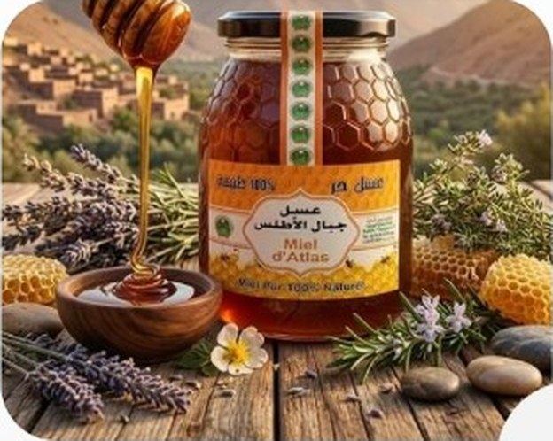

Artisanat marocain

Artisanat traditionnel
Des créations authentiques du Maroc.

Poterie marocaine
Le savoir-faire des artisans marocains.

Tapis berbères
Des tapis traditionnels et authentiques.
Artisanat, traditions et saveurs du Maroc
Découvrez la richesse du patrimoine marocain : artisanat traditionnel, tapis berbères, poteries, miel naturel, herbes et épices du Maroc.
Des créations authentiques du Maroc.
Le savoir-faire des artisans marocains.
Des tapis traditionnels et authentiques.

Découvrez les saveurs du miel marocain.

Des parfums et saveurs authentiques.

Une sélection d'herbes traditionnelles.
Téléphone / WhatsApp : à compléter